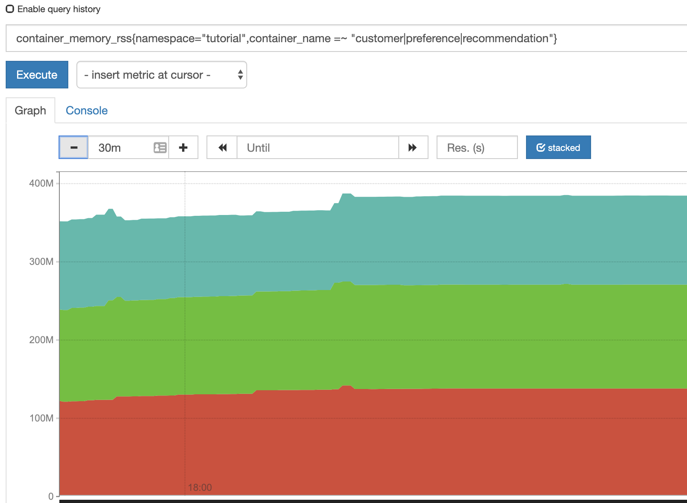
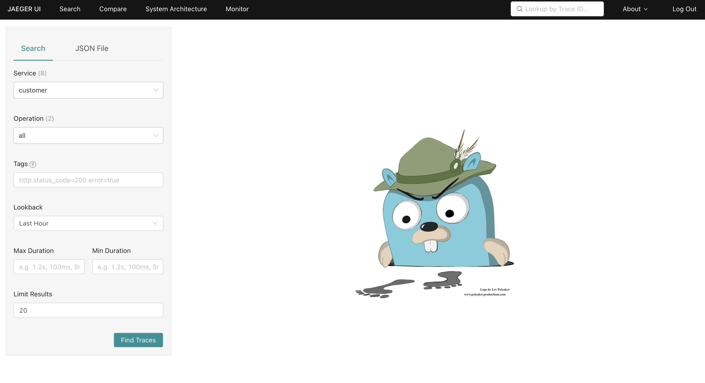

Observability
Istio includes observability features that are powered by Prometheus and Grafana. Prometheus is an open-source monitoring and alerting toolkit that is used to collect metrics from Istio and the services running within the mesh. Grafana is an open-source visualization tool that can be used to create dashboards and charts based on the data collected by Prometheus. Together, these tools provide Istio users with powerful observability capabilities, allowing them to monitor the performance of their applications and troubleshoot any issues that may arise.
Simulate Traffic in the Mesh Network
Viewing the Grafana and Prometheus dashboards won’t be interesting unless there’s traffic flowing through the services that were deployed in the Deploy Microservices section of this tutorial.
Execute the following command to produce some load on the services:
./scripts/run.sh $GATEWAY_URL/customer
The GATEWAY_URL can be obtained by returning to the Validate Ingress section.
|
Leave this command running while exploring the Grafana, Prometheus, and Jaeger dashboards.
Monitoring with Grafana
Grafana is an open-source tool for creating, exploring, and sharing dashboards for monitoring your infrastructure and applications. It allows you to query and visualize data from multiple sources, including Prometheus, Elasticsearch, and InfluxDB. Grafana is often used in combination with other monitoring tools to provide comprehensive visibility into the health and performance of your systems. Grafana was automatically deployed by the Istio installation.
Obtaining the Grafana URL
The first step to using Grafana is obtaining the URL to access the web-based Grafana dashboard:
In a new terminal window run:
istioctl dashboard grafanaNavigate to dashboard/db/istio-mesh-dashboard.
-
Login to your OpenShift Web Console.
-
Select the Administrator perspective from the side-menu.
-
Expand Networking and select Routes in the side-menu.
-
Verify that
istio-systemis selected in the Project dropdown. The Grafana route will be displayed in the Routes list.
-
Click the URL in the Location column for the
grafanalist item. This will open the Grafana dashboard in another browser window/tab. -
You will be prompted to login using your OpenShift account. Click the Log in with OpenShift button and follow the onscreen prompts to access the Grafana dashboard.

Viewing Istio Dashboards in Grafana
With access to Grafana it’s possible to view metrics dashboards that have been pre-configured by Istio:
-
Navigate to the
/dashboardspage. It should look similar to the image below.
-
Select the Istio Mesh Dashboard. It should display a metrics dashboard.

-
Click the
preference-v1.tutorialunder the Workload column to view granular metrics for the preference service. -
Expand the Outbound Services section. This provides information related to outgoing traffic. For example, it’s possible to see that the preference service sends data to Jaeger (
jaeger-collector.istio-system.svc.cluster.local) and the recommendation service (recommendation.tutorial.svc.cluster.local).
Prometheus
Prometheus is an open-source metrics collector that is commonly used in cloud-native environments. It collects data from monitored targets by scraping exposed metrics HTTP endpoints on these targets (a pull-based model), and stores the collected data in a time-series database. Prometheus also includes a powerful query language and a built-in graphing and alerting functionality, making it easy to analyze and visualize the collected data, and to set up alerts based on this data. Prometheus is often used in conjunction with other tools, such as Grafana, to provide a complete monitoring and observability solution for cloud-native applications.

Accessing the Prometheus Dashboard
In a new terminal window run:
istioctl dashboard prometheus| You can obtain the Prometheus dashboard URL using the same steps you used to obtain the Grafana URL. The below instructions are provided to demonstrate an alternative CLI-based approach. |
-
Run the following command:
kubectl get route prometheus -n istio-system -
Copy the URL printed in the HOST/PORT column from the output of the previous command.
-
Paste this into your web browser’s address bar.
-
You will be prompted to login using your OpenShift account. Click the Log in with OpenShift button and follow the onscreen prompts to access the Prometheus dashboard.
The Prometheus dashboard should now be visible in your browser.

Querying Prometheus
-
In the Prometheus dashboard, paste the following query into the input area.
istio_requests_total{destination_service="recommendation.tutorial.svc.cluster.local"} -
Click the Execute button.
-
Change the graph from "line" to "stacked" mode using the toggle.

| You may have to refresh the browser for the Prometheus graph to update. And you may wish to make the interval 5m (5 minutes) using the plus/minus icons above the graph. |
Notice that two series are displayed. This is because the Envoy proxy sidecar in the preference service Pod reports the outbound request, and the Envoy proxy sidecar in the recommendation service Pod also reports the inbound. This can be confirmed by correlating the app and instance labels of each series to the running preference and recommendation Pods using the following command:
kubectl get pod -n tutorial -o wide| The Pod IP addresses displayed in this tutorial will differ from what you see in your environment. |
For example, the screenshot above shows a series where app=preference and instance=10.217.1.2. This correlates with the preference Pod shown in the output of kubectl get pod -n tutorial -o wide:
NAME READY STATUS RESTARTS AGE IP NODE NOMINATED NODE READINESS GATES
customer-5f5d9f8767-dmc4f 2/2 Running 0 23h 10.217.0.157 crc-5nvrm-master-0 <none> <none>
preference-v1-5d474ff7bd-lf9gt 2/2 Running 1 (19h ago) 19h 10.217.1.2 crc-5nvrm-master-0 <none> <none>
recommendation-v1-6c75fc9857-d4npl 2/2 Running 0 19h 10.217.1.25 crc-5nvrm-master-0 <none> <none>Querying Container Memory Usage
Istio exposes the memory usage of the Envoy container to Prometheus.
In the Prometheus dashboard, execute the following query:
istio_agent_process_resident_memory_bytes{kubernetes_namespace="tutorial",app=~"customer|preference|recommendation"}Switch the graph to stacked mode. The RSS memory usage of the Envoy sidecar processes is displayed:

Tracing with Jaeger
Distributed Tracing involves propagating the tracing context from service to service, usually done by sending certain incoming HTTP headers downstream to outbound requests. For services embedding a OpenTracing framework instrumentations such as opentracing-spring-cloud, this might be transparent. For services that are not embedding OpenTracing libraries, this context propagation needs to be done manually.
As OpenTracing is "just" an instrumentation library, a concrete tracer is required in order to actually capture the tracing data and report it to a remote server. Our customer and preference services ship with Jaeger as the concrete tracer. the Istio platform automatically sends collected tracing data to Jaeger, so that we are able to see a trace involving all three services, even if our recommendation service is not aware of OpenTracing or Jaeger at all.
Our customer and preference services are using the TracerResolver facility from OpenTracing, so that the concrete tracer can be loaded automatically without our code having a hard dependency on Jaeger. Given that the Jaeger tracer can be configured via environment variables, we don’t need to do anything in order to get a properly configured Jaeger tracer ready and registered with OpenTracing. That said, there are cases where it’s appropriate to manually configure a tracer. Refer to the Jaeger documentation for more information on how to do that.
Let’s open the Jaeger console, select customer from the list of services and click Find Traces
Accessing the Jaeger Dashboard
In a new terminal window run:
istioctl dashboard jaeger-
Login to your OpenShift Web Console.
-
Select the Administrator perspective from the side-menu.
-
Expand Networking and select Routes in the side-menu.
-
Verify that
istio-systemis selected in the Project dropdown. The Jaeger route will be displayed in the Routes list. -
Click the URL in the Location column for the
jaegerlist item. This will open the Jaeger dashboard in another browser window/tab. -
You will be prompted to login using your OpenShift account. Click the Log in with OpenShift button and follow the onscreen prompts to access the Jaeger dashboard.
The Jaeger dashboard will look similar to the following screenshot.

Viewing Traces
| Jaeger’s traces are based on traffic in the Istio mesh network. Make sure to follow the instructions in the Simulate Traffic in the Mesh Network section before proceeding. |
Perform a search to view traces:
-
Select the Search screen from the header in the Jaeger dashboard.
-
Choose
istio-ingressgateway.istio-systemin the Service dropdown from the Search pane. -
Leave the other inputs at their default values and click Find Traces.
A plot of traces corresponding to HTTP requests is displayed, along with a list of those items from the plot.

Viewing Detailed Trace Information
View more trace details:
-
Click the first item returned in the list of traces. A more detailed view of the trace is displayed.
-
Select the
Trace Timelineview from the dropdown in the top-right. -
Expand the following trace segments by clicking their names:
-
istio-ingressgateway.istio-system -
customer.tutorial -
customer
-
These segments represent different stages of the request flow through the mesh and microservices in our application architecture.

The first segment represents when the request entered our mesh via the istio-ingressgateway in the istio-system namespace. Next, the request was routed to the customer service in the tutorial namespace. You can corelate both of the IP addresses listed in these segments with the running Pods in each namespace. The third segment represents the processing of the request in the getCustomer method of the customer Java application.
Analysing Request Processing Times
If there’s a slowdown in request processing, the Trace Flamegraph could be used to identify candidates for closer inspection during a root cause analysis.
-
Select
Trace Flamegraphfrom the top-right. -
Set the view toggle to Table mode.

The segments are ordered from longest to shortest self processing time, by default. For the trace shown in the screenshot above, it’s clear that there was a minor network delay at the recommendation service. Most of the network traffic segments show durations between 57ms and 74ms, but the recommendation segment is 1.63ms.